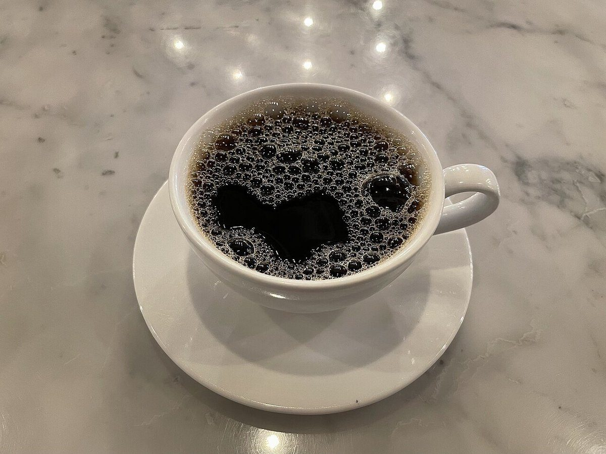
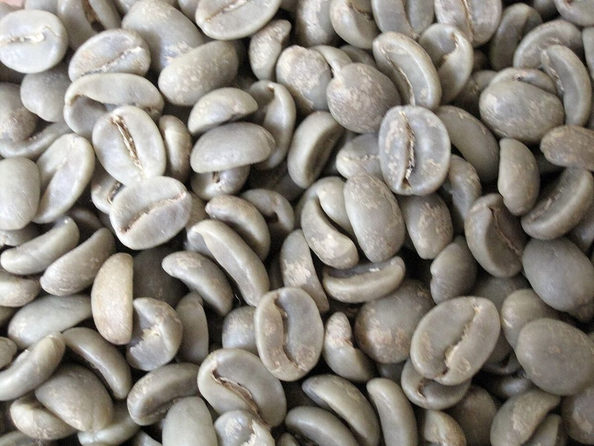

03 / メニュー
メニュー
メニューと価格は準備中です。確認でき次第、ここに掲載します。
MENU TICKET
- ドリンク準備中
- フード準備中
- テイクアウト準備中
- 価格準備中
提供内容はお店に確認するまで断定しません。下の写真は、コーヒーのイメージを伝えるフリー素材です。
イメージ写真




03 / メニュー
メニューと価格は準備中です。確認でき次第、ここに掲載します。
MENU TICKET
提供内容はお店に確認するまで断定しません。下の写真は、コーヒーのイメージを伝えるフリー素材です。
イメージ写真

